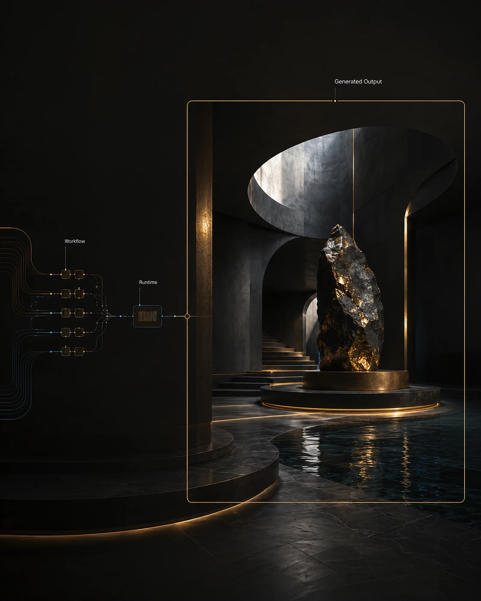
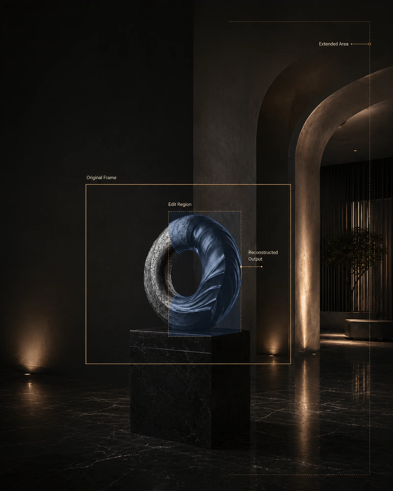
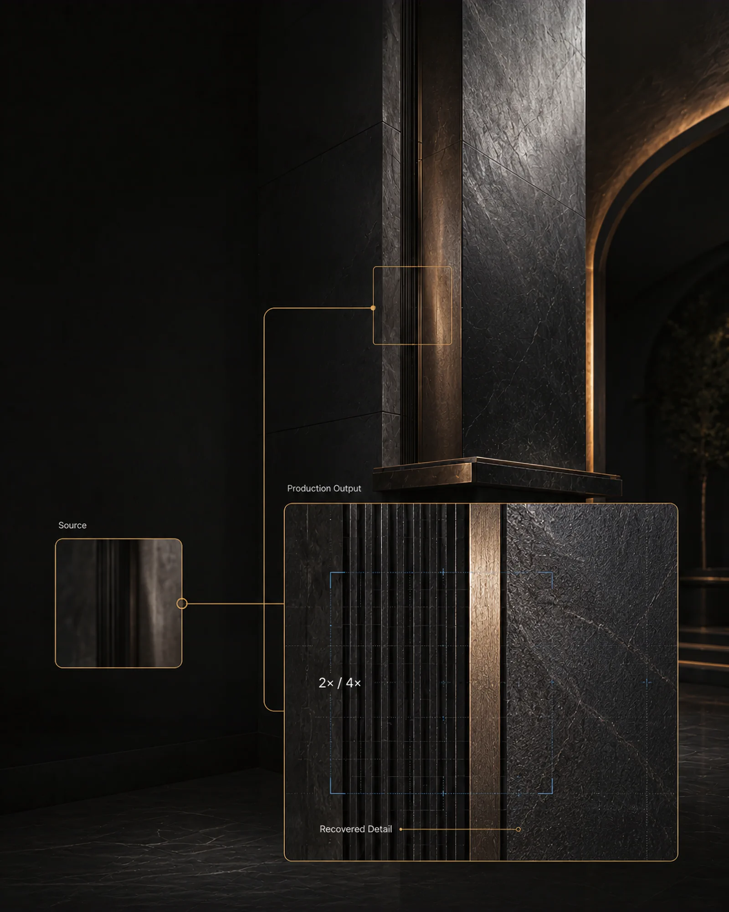

01 Problem
A working ComfyUI graph is not yet a dependable production service.
Production teams need repeatable versions, a stable request contract, predictable deployment boundaries, and evidence that the exact runtime has passed its release checks. A single mutable image makes generation, editing, and high-resolution output harder to maintain and reason about.
02 System
Three separately versioned runtimes, one public contract.
Comfy Rail separates generation, editing/outpainting, and upscaling into maintained runtime profiles. Customers keep execution inside their own RunPod account while the product defines the compatible workflow path, API boundary, and controlled release evidence.
- 01Separate runtime profilesGeneration, editing, and upscaling can evolve and be released without turning one container into an opaque monolith.
- 02Customer-owned infrastructureExecution, storage, and infrastructure billing stay in the customer's RunPod account.
- 03Release gates fail closedA runtime is not presented as commercially cleared until its exact dependencies and release evidence pass the defined checks.
03 Role
Product strategy, runtime architecture, and launch system.
I shaped the product positioning, split the runtime architecture around real workflow responsibilities, built the contract and deployment path, and developed the public product experience. The public case deliberately leaves private implementation details and customer operations out.
04 Evidence
One maintained route for each production responsibility.
The public product and readiness documentation are live. These project visuals show the three runtime profiles without exposing private repository or operational details.


